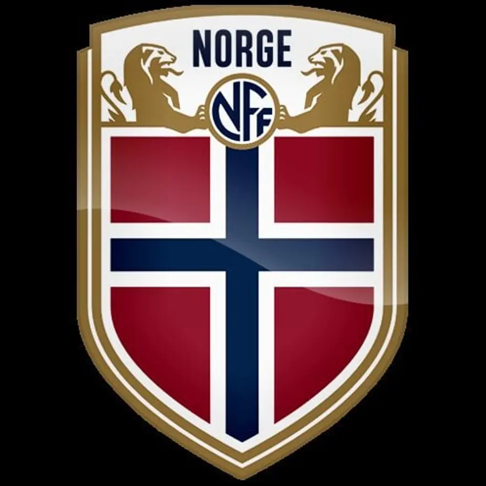
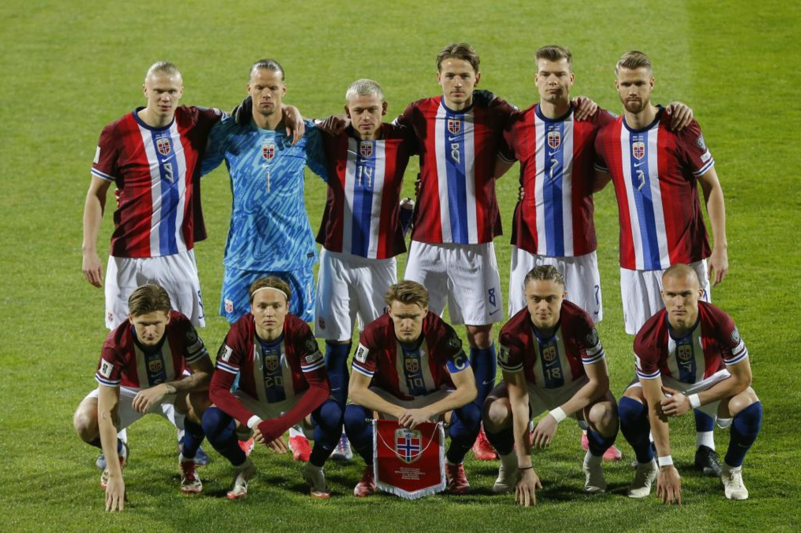

Noruega
Noruega3
Participações
(1938-1998)

Europa
A Noruega possui três participações em Copas do Mundo e nunca passou da fase de grupos. Apesar da modesta trajetória no Mundial, a seleção norueguesa ficou famosa por eliminar o Brasil nas Olimpíadas de 1996 e por contar com grandes nomes como Ole Gunnar Solskjær.

Goleiros:
Defensores:
Meio-campistas:
Atacantes:
Participações
(1938-1998)
Títulos
-
Melhor campanha
Primeira
participação
| Ano | Sede | Resultado |
|---|---|---|
| 1938 | Primeira rodada | |
| 1994 | Fase de grupos | |
| 1998 | Oitavas de final |
| Jogos disputados | 8 |
| Vitórias | 2 |
| Empates | 2 |
| Derrotas | 4 |
| Gols marcados | 8 |
| Gols sofridos | 11 |

calendar_monthJunho - Julho de 2026
location_onMéxico, Estados Unidos e Canadá